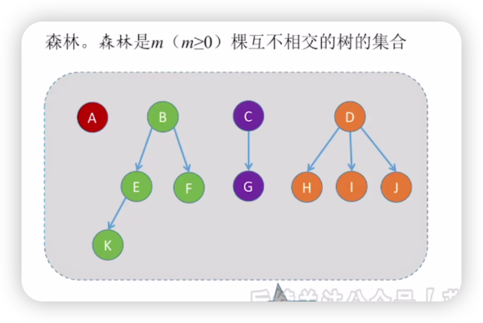
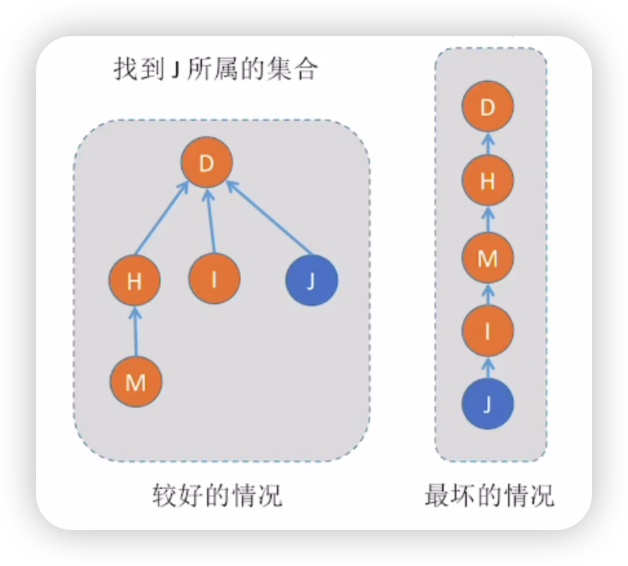

树
树的基本概念
定义
树是n个节点的有限集。
当$n=0$时，称为空树；
当$n\neq 0$时，称为非空树。
非空树的特性：
- 有且仅有一个根结点
- 没有后继的节点称为“叶子结点”（或终端结点）
- 有后继的节点称为“分支结点”（或非终端结点）
- 除了根结点外，任何一个结点都有且只有一个前驱
- 每个结点可以有0个或多个后继
基本术语
结点间的关系
祖先：对结点K来说，从根A到结点K的唯一路径上的所有其他结点，称为结点K的祖先
子孙：如结点B是结点K的祖先，而K是B的子孙，结点B的子孙包括E、F、K、L。
双亲：路径上最接近结点K的结点E称为K的双亲
孩子：K为E的孩子
兄弟：有相同双亲的结点称为兄弟
堂兄弟：双亲在同一层的结点互为堂兄弟，如结点G与E、F、H、I、J互为堂兄弟
结点的层次、深度和高度
结点的层次：根结点为第1层，它的孩子是第2层
结点的深度：就是结点的层次
树的高度：树中结点的最大层数
结点的高度：以该结点为根的子树的高度
结点的度和树的度
结点的度：该结点的孩子个数
树的度：树中结点的最大度数
分支结点和叶结点
分支结点（非终端结点）：度大于0的结点
叶结点（终端结点）：度为0的结点
有序树和无序树
有序树：树中结点的各子树从左到右是有次序的，不能互换
无序树：树中结点的各子树从左到右是无次序的，可以互换
路径和路径长度
路径：两个结点之间所经过的结点序列（只能从上到下）
路径长度：路径上所经过的边的个数
森林
森林：森林是m（m>=0）棵互不相交的树的集合。
树的性质
考点一：结点数和总度数的关系
1 | 结点数=总度数+1 |
考点二：度为m的树和m叉树的区别
树的度：各结点度的最大值
m叉树：每个结点最多只能有m个孩子
| 度为m的树 | m叉树 |
|---|---|
| 任意结点的度<=m（最多m个孩子） | 任意结点的度<=m（最多m个孩子） |
| 至少有一个节点度=m（有m个孩子） | 允许所有节点的度<m |
| 一定是非空树，至少有m+1个结点 | 可以是空树 |
考点三：第i层的结点数
度为m的树/m叉树 第i层至多有$m^{i-1}$ 个结点（i>=1）
考点四：高度为h的最大结点数
高度为h的m叉树至多有 $\frac{m^h-1}{m-1}$ 个结点
每层最大结点数之和为：
$$
m^0+m^!+m^2+ \cdots+m^{h-1}=\frac{1-m^{h}}{1-m}
$$
考点五：高度为h的最小结点数
高度为h的m叉树至少有h个结点
高度为h的度为m的树至少有h+m-1个结点
考点六：n个结点m叉树的最小高度
具有n个结点的m叉树的最小高度为$\lceil\log_{m}{(n(m-1)+1)} \rceil$
二叉树的概念
定义
二叉树是n（n>=0）个结点的有限集合
当$n=0$时，为空二叉树
当$n\neq0$时，由根结点和左右子树组成，左右子树也是二叉树
二叉树的特点：
- 每个结点至多只有两棵子树
- 左右子树不能颠倒（有序树）
二叉树的五种状态：
几种特殊的二叉树
满二叉树
定义：高为h，有$2^h-1$个结点的二叉树。
特点：
- 只有最后一层有叶子结点
- 不存在度为1的结点
- 按层序从1开始编号，结点i的左孩子为2i，右孩子为2i+1，父结点为$\lfloor\frac{i}{2}\rfloor$
完全二叉树
定义：当且仅当每个结点都与高度为h的满二叉树中编号为1～n的结点一一对应时，称为完全二叉树
特点：
- 只有最后两层可能有叶子结点
- 最多只有一个度为1的结点
- 序号关系同满二叉树
- $i\le \lfloor\frac{n}{2}\rfloor$ 为分支结点，$i\gt \lfloor\frac{n}{2}\rfloor$为叶子结点
二叉排序树
定义：
左子树上所有结点的关键字均小于根结点的关键字；
右子树上所有结点的关键字均大于根结点的关键字；
左右子树各是二叉排序树。
平衡二叉树
定义：树上任意一个结点的左子树和右子树的高度之差的绝对值不超过1
特点：有更高的搜索效率
正则二叉树
定义：树中每个分支结点都有2个孩子，即树中只有度为0或2的结点
二叉树的性质
性质1：结点数间的关系（重点）
非空二叉树上的叶结点数等于度为2的结点数加1，即 $n_0=n_2+1$
性质2：第i层的结点数
非空二叉树的第i层最多有$2^{i-1}$个结点（i>=1）
性质3：高为h的二叉树的结点数
高为h的二擦树至多有$2^h-1$ 个结点（h>=1）（满二叉树）
等比数列求和
完全二叉树的性质
性质1：n个结点完全二叉树的高度
具有n个（n>0）结点的完全二叉树的高度h为$\lceil\log_{2}{(n+1)}\rceil$或$\lfloor\log_{2}{n}\rfloor+1$
性质2：度为1的结点个数
完全二叉树最多只有一个度为1的结点，即$n_1=0或1$
又因为$n_0=n_2+1$,故$n_0+n_2$一定为奇数
若完全二叉树有偶数(2k)个结点，则
$$
n_0=k\n_1=1\n_2=k-1
$$
若完全二叉树有奇数（2k-1）个结点，则
$$
n_0=k\
n_1=0\
n_2=k-1
$$
二叉树的存储结构
顺序存储
只适合用来存储完全二叉树或满二叉树，一般的二叉树需要先按照完全二叉树添加空结点，再进行编号
链式存储
1 | // 二叉树结点 |
1 | // 二叉树的链式存储 |
也可以增加父结点指针
1 | // 二叉树结点 |
二叉树的遍历
分类
先序遍历：根左右
中序遍历：左根右
后序遍历：左右根
层次遍历
先序遍历
思路：
- 若二叉树为空，什么也不做
- 若二叉树非空
- 访问根结点
- 先序遍历左子树
- 先序遍历右子树
代码：
1 | // 先序遍历 |
中序遍历
思路：
- 若二叉树为空，什么也不做
- 若二叉树非空：
- 中序遍历左子树
- 访问根结点
- 中序遍历右子树
代码：
1 | // 中序遍历 |
后序遍历
思路：
- 若二叉树为空，什么也不做
- 若二叉树非空：
- 后序遍历左子树
- 后序遍历右子树
- 访问根结点
代码
1 | // 后序遍历 |
层次遍历
思路：
- 初始化一个辅助队列
- 根结点入队
- 若队列非空，则队头结点出队，访问该结点，并将其左、右孩子插入队尾
- 重复3直至队列为空
代码
1 | // 层次遍历 |
应用：求树的深度
1 | int treeDepth(BiTree T) |
由遍历序列构造二叉树
若只给出一棵二叉树的 前/中/后/层 序遍历的一种，不能唯一确定一棵二叉树
前序+中序
根据前序序列确定根结点，再根据中序序列中根结点的位置确定左右子树，对左右子树重复以上操作即可。
1 | 前序：ADBCE |
1.根结点为A，左子树包括BDC，右子树包括E
2.左子树根结点为D，D的左孩子是B，右孩子是C
1 | 前序：DAEFBCHGI |
1.根结点为D，左面有EAF，右面有HCBGI
2.左子树根结点为A，左孩子为E，右孩子为F
3.右子树根结点为B，左面有HC，右面有GI
4.B的左子树根结点为C，C的左孩子为H
5.B的右子树根结点为G，G的右孩子为I
后序+中序
同样根据后序序列确定根结点，再根据中序序列中根结点的位置确定左右子树并重复操作。
1 | 后序：EFAHCIGBD |
1.根结点为D，左面有EAF，右面有HCBGI
2.左子树根结点为A，A的左孩子为E，右孩子为F
3.右子树根结点为B，B的左面有HC，右面有GI
4.B的左子树根结点为C，C的左孩子为H
5.B的右子树根结点为G，G的右孩子为I
层序+中序
根据层序序列确定根结点，同样根据中序序列确定左右关系
1 | 层序：ABCDE |
1.根结点为A，左子树为空，右面有CBED
2.右子树根结点为B，B的左孩子为C，右面有ED
3.B的右子树根结点为D，D的左孩子为E
线索二叉树
概念
作用
方便找到指定结点的前驱和后继
n个结点的二叉树，有n+1个空链域，可用来记录前驱、后继的信息
线索：指向前驱或后继的指针
对于不同的遍历顺序，有不同的线索
定义
1 | // 线索二叉树结点 |
前驱线索由左孩子指针充当
后继线索由右孩子指针充当
tag=0 表示指针指向孩子
tag=1 表示指针是线索
二叉树的线索化
中序线索化
思路：
对于每个结点，尝试增加其前驱和后继，
前驱：需要当前结点的左孩子为空（有空链域）
后继：需要pre结点的右孩子为空（有空链域），且pre结点不为NULL（树上的结点）
第一个结点的前驱和最后一个结点的后继都为NULL
王道视频版
1 | // 线索二叉树结点 |
王道教材版
1 | // 中序线索化（王道教材版） |
注意
- 教材版中的pre结点为引用传参
- 最后一个结点可以不判断右孩子是否为NULL，因为中序遍历的最后一个结点右孩子一定为NULL
先序线索化
需要注意：由于先处理当前结点，有些结点本来没有左孩子，但是增加了前驱线索，这时候需要判断左孩子是否为前驱线索，再进行递归，否则会一直循环！！（只有先序有这个问题）
其他代码不变
1 | void PreThread(ThreadTree T) |
后序线索化
1 | void PostThread(ThreadTree T) |
只是遍历顺序变化
王道教材版
1 | // 后序线索化（王道教材版） |
找前驱后继
中序后继
目标：在中序线索二叉树中找到指定结点 p 的中序后继 next
思路：
- 若p->rtag==1，则next=p->rchild
- 若p->rtag==0，则next=p的右子树中最左下结点
1 | // 找到以p为根的子树中，第一个被中序遍历的结点 |
中序前驱
目标：在中序线索二叉树中找到指定结点 p 的中序前驱 pre
思路：
- 若p->ltag==1，则pre=p->lchild
- 若p->ltag==0，则pre=p的左子树中最右下结点
1 | // 找到以p为根的子树中，最后一个被中序遍历的结点 |
先序后继
目标：在先序线索二叉树中找到指定结点 p 的先序后继 next
思路：
- 若p->rtag==1，则next=p->rchild
- 若p->rtag==0
- 若p有左孩子，则next=p->lchild
- 若p没有左孩子，则next=p->rchild
先序前驱
目标：在先序线索二叉树中找到指定结点 p 的先序前驱 pre
思路：
- 若p->ltag==1，则pre=p->lchild
- 若p->ltag==0，在每个结点仅有两个链域（左右孩子指针）的情况下无法找到先序前驱
如果增加父结点指针域，就可以找到p的父结点，再分情况：
- p是父结点的左孩子，则父结点为p的前驱
- p是父结点的右孩子且左兄弟为空，则父结点为p的前驱
- p是父结点的右孩子且左兄弟非空，则p的前驱为左兄弟子树中最后一个被先序遍历的结点
- 如果p是根结点，没有父结点，则p没有先序前驱
后序前驱
目标：在后序线索二叉树中找到指定结点 p 的后序前驱 pre
思路：
- 若p->ltag==1，则pre=p->lchild
- 若p->ltag==0，
- 若p有右孩子，则pre=p->rchild
- 若p没有右孩子，则pre=p->lchild
后序后继
目标：在后序线索二叉树中找到指定结点 p 的后序后继 next
- 若p->rtag==1，则next=p->rchild
- 若p->rtag==0，在每个结点仅有两个链域（左右孩子指针）的情况下无法找到先序前驱
如果增加父结点指针域，就可以找到p的父结点，再分情况：
- p是父结点的右孩子，则父结点为p的后继
- p是父结点的左孩子且右兄弟为空，则父结点为p的后继
- p是父结点的左孩子且右兄弟非空，则p的后继为右兄弟子树中第一个被后序遍历的结点
- 如果p是根结点，没有父结点，则p没有后序后继
总结
| 中序线索二叉树 | 先序线索二叉树 | 后序线索二叉树 | |
|---|---|---|---|
| 找前驱 | ✅ | 从头遍历或使用三叉链表 | ✅ |
| 找后继 | ✅ | ✅ | 从头遍历或使用三叉链表 |
树和森林
存储结构
双亲表示法（顺序存储）
树
思路：用数组顺序存储各个结点，每个结点中保存数据元素和指向父结点的指针
根结点的双亲指针=-1
非根结点的双亲指针=父结点在数组中的下标
1 |
|


森林
每棵树的根结点双亲指针=-1
优缺点
优点：找双亲（父结点）方便
缺点：找孩子不方便，只能遍历整个数组
适用于“找父亲”多，“找孩子”少的场景，如：并查集
孩子表示法（顺序存储+链式存储）
树
1 | // 孩子表示法 |
森林
存储森林时，需要在结构体中记录多个根结点的位置

优缺点
优点：找孩子很方便
缺点：找双亲（父结点）不方便，只能遍历每个链表
适用于“找孩子”多，“找父亲”少的场景，如：服务流程树
孩子兄弟表示法（链式存储）
树
1 | // 孩子兄弟表示法 |
森林
考点：树、森林与二叉树的转换
树、森林与二叉树的转换
树转二叉树
思路：
- 先确定根结点
- 按树的层序依次处理每个结点，如果当前结点有孩子：
- 将所有孩子用右指针连接起来
- 将第一个孩子连接到当前结点的左指针
森林转二叉树
思路：
- 将每棵树的根结点视为兄弟，用右指针相连
- 按森林的层序处理每个结点，处理方法和树一致
二叉树转树
思路：
- 确定根结点
- 从树的根结点开始，按层序恢复每个结点的孩子，如果当前处理的结点有左孩子：
- 把左孩子和一串右指针连接的结点拆下来，按顺序挂在当前结点下方
二叉树转森林
思路：
- 先把二叉树的根结点和一整串右指针结点拆下来，作为多个根结点
- 按森林的层序恢复每个结点的孩子，处理方法和树一致
树的遍历
先根遍历
先根遍历：若树非空，先访问根结点，再依次对每棵子树进行先根遍历
伪代码：
1 | // 树的先根遍历 |
树的先根遍历序列与对应二叉树的先序遍历序列相同
后根遍历
后根遍历：若树非空，先依次对每棵子树进行后根遍历，最后再访问根结点
伪代码：
1 | // 树的后根遍历 |
树的后根遍历序列与对应二叉树的中序遍历序列相同
层次遍历
思路：用队列实现
- 若树非空，则根结点入队
- 若队列非空，队头元素出队并访问，同时将该元素的孩子依次入队
- 重复2直到队列为空
森林的遍历
先序遍历
先序遍历森林：
- 若森林为非空，访问森林中第一棵树的根结点
- 先序遍历第一棵树中根结点的子树森林
- 先序遍历除去第一棵树之后剩余的树构成的森林
等同于对各个树进行先根遍历
也等同于对相应的二叉树进行先序遍历
中序遍历
中序遍历森林：
- 若森林为非空，中序遍历森林中第一棵树的根结点的子树森林
- 访问第一棵树的根结点
- 中序遍历除去第一棵树之后剩余的树构成的森林
等同于对各个树进行后根遍历
也等同于对相应的二叉树进行中序遍历
总结
| 森林 | 树 | 二叉树 |
|---|---|---|
| 先序遍历 | 先根遍历 | 先序遍历 |
| 中序遍历 | 后根遍历 | 中序遍历 |
树与二叉树的应用
哈夫曼树
带权路径长度
结点的权：有某种现实意义的数值（如：结点的重要性）
结点的带权路径长度：从树的根到该结点的路径长度（经过的边数）与该结点上权值的乘积
树的带权路径长度：树中所有叶结点的带权路径长度之和（WPL，Weighted Path Length）
$$
WPL=\sum_{i=1}^{n}w_il_i
$$
$w_i$ 是第i个叶结点所带的权值，$l_i$ 是该叶结点到根结点的路径长度
哈夫曼树的定义
在含n个带权结点的二叉树中，其中带权路径长度（WPL）最小的二叉树称为哈夫曼树，也称最优二叉树
哈夫曼树的构造
给定n个权值分别为 $w_1,w_2,\cdots,w_n$ 的结点，构造哈夫曼树的算法如下：
- 将这n个结点分别作为n棵仅含一个结点的二叉树，构成森林F
- 构造一个新结点，从F中选取两颗根结点权值最小的树作为新结点的左右子树，并且将新结点的权值置为左、右子树上根结点的权值之和
- 从F中删除刚才选出的两棵树，同时将新得到的树加入F中。
- 重复步骤2和3，直至F中只剩下一棵树为止
哈夫曼树的性质
- 每个初始结点最终都成为叶结点，且权值越小的结点到根结点的路径长度越大
- 构造过程中新建了n-1个结点，因此哈夫曼树的结点总数为2n-1
- 哈夫曼树中不存在度为1的结点
- 哈夫曼树不唯一，但WPL必然相同且为最优
哈夫曼编码
固定长度编码：每个字符用相等长度的二进制位表示
ASCII编码
A —— 0100 0001
B —— 0100 0010
C —— 0100 0011
D —— 0100 0100A —— 01
B —— 10
C —— 11
D —— 00
可变长度编码：允许对不同字符用不等长的二进制表示位
前缀编码：没有一个编码是另一个编码的前缀
可变长度编码允许对频率高的字符使用短编码，前缀编码则可以避免歧义
C —— 0
A —— 10
D —— 110
B —— 111
哈夫曼编码：字符集中的每个字符作为一个叶子结点，各个字符出现的频度作为结点的权值，构造哈夫曼树，可用于数据压缩
并查集
并查集的概念
并查集是一种简单的集合表示，支持以下操作：
Initial(S)：将集合S中的每个元素都初始化为只有一个单元素的子集合Union(S,Root1,Root2)：把集合中的子集合Root2并入子集合Root1Find(S,x)：查找集合S中单元素x所在的子集合，并返回该子集合的根结点
并：集合的合并
查：查找某个元素属于哪个集合
并查集的存储结构
通常用森林的双亲表示法作为并查集的存储结构，每个集合以一棵树表示，每棵树的根结点的双亲域为-1（或该集合中元素数量的相反数）
1 |
|
时间复杂度
若结点数为n，查操作最坏时间复杂度为O(n)，并操作的时间复杂度为O(1)

并操作优化
思路：
- 用根结点的绝对值表示结点总数
- 在合并时，让小树合并到大树，尽量不让树变“高”
1 | void Union(int S[], int Root1, int Root2) |
该方法构造的树高不超过 $\left \lfloor \log_{2}{n} \right \rfloor + 1$
优化后Find操作最坏时间复杂度为 $O(log_2n)$
查操作优化（压缩路径）
思路：Find操作，先找到根结点，再将查找路径上所有结点都挂到根结点下
1 | // 先找到根结点，再进行压缩路径 |
Find操作先找根，再压缩路径，可使树的高度不超过$\alpha(n)$，对于常见的n值，通常不超过4，基本可以看作常数级
算法可视化网站：https://www.cs.usfca.edu/~galles/visualization/Algorithms.html